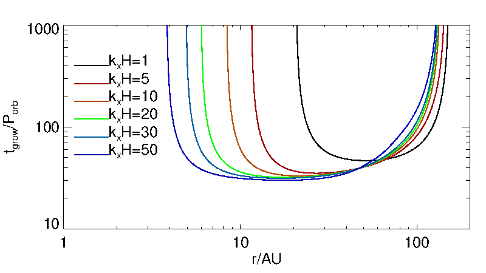
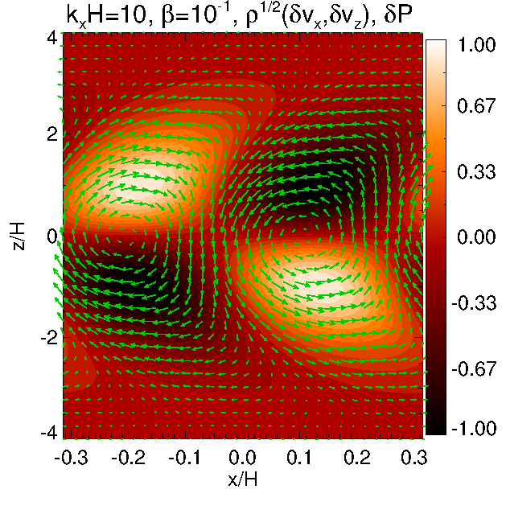

Hello there.
I am an astrophysicist
currently working as a post-doctoral fellow at Steward
Observatory, University of Arizona. I hold the first Steward
Theory Fellowship. Please click the links at the top for more
information.
VERTICAL
SHEAR INSTABILITY: A HYDRODYNAMIC ROUTE TO TURBULENCE IN
PROTOPLANETARY DISKS
The figures above show
the vertical shear
instability operating in protoplanetary disks.
PPDs possess vertical shear --- the orbital frequency of the
disk material around the central star depends on the height away
from the midplane. This vertical
shear is a source of free energy and therefore
instability. The instability manifests itself as vertically-elongated,
radially-narrow disturbances (see the right panel ---- note the
horizontal axis is stretched). Early numerical simulations of
idealized disk models show that this VSI can lead to purely
hydrodynamic turbulence.
However, in realistic
disks the VSI generally requires fast
cooling. That is, temperature flucations must decay
rapidly in order for the instability to actually operate. Rapid
cooling is needed to reduce the effect of entropy gradients
which, in realistic disk models, provides a strongly stabilizing
effect against the relatively weak vertical shear in
astrophysical disks.
In this work (Lin
& Youdin, 2015), we quantify the thermodynamic
requirement for the VSI through analytical calculations. We
obtain a criteria that is a simple function of the disk
parameters, and apply it to assess the stability of actual PPDs
against the VSI. We find the VSI indeed operates in realistic
PPDs, but is most effective at intermediate radii, about 5AU to
50AU (see the left panel, which show the growth times of the VSI
as a function of disk radius).